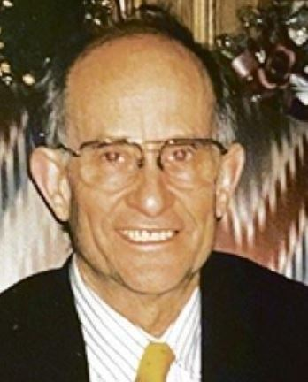

Announcements
Mark your calendars! The December meeting will be on December 28th, 11AM at Golden Corral at 1420 Eastgate Dr, Garland, TX 75041 . See you there. Be there or be square.
FSA Eligble Expenses List
Click here for the FSA eligible expense list
Submit your Stories and Photos NOW! (2020-04-02)
Click the "My Story" button below and submit your story our New Stories page.
Submit your Garland ESY/Raytheon stories now!!
E-SYSTEMS/RAYTHEON RETIREES LUNCH GROUP
By Eileen Wahlstrom
September 28, 2022 / October 26, 2022
The September meeting was hosted by Terry Gaus in the absence of Eileen due to the needs of her grandchildren.
Present: 22, 23
First Time: none, Chuck Farlow
Long Time: none, Pris Frye, JD Ray
Guests: none, none
SICKNESS:
Bobby Gambrell updated everyone on the status of his wife: 44 days (and counting) in hospital care. He also pointed out how, on a visit to her at the hospital in the early portion of this period, he found her incapacitated on the floor (presumably after attempting to visit the bathroom unassisted). She had been on the floor for quite some time, pointing out the irregularity of the hospital’s nursing care. Lucky thing that he showed up for a visit when he did; otherwise, the outcome could have been much worse.
Latest from Bobby is that Carolyn has been diagnosed with Dementia.
Jerry Kocher: He has been in the hospital since October 6th with fluid on his brain (hydro encephalitis). Last heard the doctors are discussing a procedure to drain the fluid.
Deaths
George Carter
June 1942 – August 2022
No obituary. George was a supervisor in maintenance. He was 80 years old at time of death
Fred Wnorowski
June 1935 – September 2022
Frederic Augustus Wnorowski, longtime and well known resident of Terrell, passed away on September 4, 2022 at the age of 87. Fred was born June 17, 1935 in Salem, Illinois to Paul and Ruby Wnorowski, both of whom met him in Heaven along with his daughter, Jan McIntyre, great grandsons, Jackson and Judd Fojtasek, sister, Yolanda Morrison and her husband, Amos.
Fred’s family moved to Terrell in 1953 when he was a junior in high school. After graduation, he enlisted in the United States Army and was stationed in Germany, where he proudly served. He married the love of his life, Saundra Conder, on June 5, 1954. Upon returning to Terrell after his military service, Fred worked at KTER, the radio station owned by his father. He later worked as an Electrical Engineer at Temco. After 36 years, he retired from that company which had become (LTV, E-Systems), Raytheon to spend more time with his family.
Fred served his community in many ways. He was a longtime and active member of the First Christian Church of Terrell where he served as an elder as well as serving a term as Chairman of the Board. He also was a member of the Terrell Jaycees where he was elected President along with several other positions and capacities.
Above all, Fred loved his wife of 68 years, Saundra, and was an excellent provider and beloved father to his four children. His devotion to his family and his service to his church and his community set the highest standard and will be proudly carried on by the generations that follow him.
He is survived by wife Saundra Wnorowski; children: Jill Wilson, (Pat), Ted Rusky, (Tracy), and Lori Fojtasek, (David); his ten grandchildren: Lauren Villarreal, Nicholas Wilson (Amanda), Alex Rusky, Ashley Smith, (Billy), Andy Dansby, Jordan Jasnocha (Zach), Camryn McIntyre, Chelsea Polinsky (Corey), Hailee Smith (Garrett), and Pierson Fojtasek; his ten great grandchildren: Jacob and Emma Villarreal, Reagan, Taylor, and Sam Wilson, Robin Jasnocha, Haze and Hollis Conner and Wyatt and Elliott Smith as well as many other extended family, church family and a host of friends.
Obituary: Click here
Robert “Bob” Claar
March 1943 – September 2022
Robert (Bob) C. Claar U.S.N.R (retired) of Murphy, Texas was taken into the arms of Jesus on September 10, 2022.
Bob was born in Waco, Texas, moved to Dallas with his parents, then moved to Moriarty, New Mexico. Bob's parents owned a curio store and gas station called The Hitching Post on Old Route 66.
In 1961, Bob graduated from the New Mexico Military Institute and then went on to the University of New Mexico where he received his bachelor's degree in 1965, and later an MBA from the University of Dallas in 1982.
In 1965, Bob was commissioned as an officer in the U.S. Navy, serving as both a line officer and then a supply officer. Bob served seven campaigns in Vietnam on the USS White River LSMR-536 and was stationed in Japan at two separate times. Once U.S involvement in Vietnam ended, he returned to the States and settled in the DFW area. He continued to serve in the U.S. Naval Reserve until 1993, when he retired at the rank of Commander.
Returning to the civilian world, Bob worked as a materials manager for Hunt Tools until 1986. He then made a career move to work for Raytheon (formerly E-Systems) in Greenville, TX, then relocated to the Raytheon – Garland location, where he retired as Senior Contracts Manager in 2006.
Bob was a devoted husband to his wife of thirty-eight years, Patti. Bob and Patti would often explore the U.S. in their RV, as well as taking many cruises together exploring different countries in Europe and the Mediterranean.
Bob was a father, grandfather, great-grandfather, and friend. He loved his large family, and loved his Labrador Retriever, Tucker. Those closest to Bob knew he loved to sing Karaoke–especially Elvis Presley and going as far as to devoting a room in his house to the legend. He loved working on his many home projects and loved meeting people wherever he went, never knowing a stranger. His heart was full of joy and love for everyone in his life, but his love for the Lord was never pushed aside.
He loved the Lord and faithfully served at Christ Church, Anglican, located in Plano, for thirty-five years until his illness prevented his service there. Bob was surrounded by his family when he passed.
Bob is survived by his loving wife Patricia (Patti) Claar; children Debbie Gurley (Tom), Brittany Claar de Gonzalez (Andres'), Bobbi Quigley (Cort), Britainy Goss, Ashley Moody, Shane Goss; grandchildren, Austin Gurley, Brennon Gurley (Demi), Conner Gurley, Drew Gurley, Addison, Melissa and Cristiano Gonzalez, Emmerson and Briston Quigley, Cecilia Goss, Nicholas, Ryder and Samuel Moody, Aiden and Brady Goss; great-grandchildren Tatum and Easton Gurley and numerous nephews and nieces. He was preceded in death by his mother and father, Joan and John Claar, sister Linda, and many other siblings. He was loved and will be greatly missed.
If desired, contributions may be made in Bob's name to the discretionary fund at his beloved Christ Church-Anglican, 4550 Legacy Drive, Plano, Texas 75024, or to the Pulmonary Fibrosis Foundation at www.pulmonaryfibrosis.org, or mail to: Pulmonary Fibrosis Foundation, 230 E. Ohio St., Suite 500, Chicago, Illinois, 60611.
Obituary: Click here
Ed Redwine
December 1939 – September 2022

EDWINE, Edward Edward William Redwine passed away at his home in Dallas on Friday, September 9, 2022. Visitation will be held from 1:00 to 2:00 on Saturday, September 17, 2022 at Griffin-Roughton Funeral Home in Fairfield, Texas followed by the funeral service at 2:00pm. Interment at the Bonner Cemetery will be immediately following the service. A pre-funeral reception will be held on Friday, September 16 at 1:00pm at the United Disciples Christian Church in Richardson, Texas.
Edward was born on December 13, 1939 in Decatur, Texas to Lorene (Doyle) Redwine and Robert Lafayette Redwine. Shortly after his birth, the family moved to Oak Cliff in Dallas, Texas. There, he attended Margaret B. Henderson Elementary School, Greiner Middle School, and Adamson High School. Ed also maintained a group of friends who went to Sunset High School due to a boundary change. He graduated from Arlington State College (future University of Texas at Arlington) with a bachelor's degree in Mathematics. He then attended North Texas State University, where he earned a master's degree in Mathematics.
Ed enjoyed a long and successful career as a software engineer at LTV/E-Systems/Raytheon, where he worked on highly classified software programs. He and Mary Sue were on the initial team that delivered & installed the first software/firmware/hardware system at the Joint Defense Space Research Facility in Alice Springs, Australia in 1972.
He retired from Raytheon in 2009 after 45 years of service. Ed went to work for LTV in 1964 and met Mary Sue. They dated for 14 years and married in 1980 in the Presbyterian Church in Fairfield. They bought a historic home in the Highland Park neighborhood of Dallas and relocated there in 1990. They were married for 42 years, working at E-Systems together as software engineers, spending their time side by side, and collaborating on all facets of life. Ed, along with Mary Sue, was a member of the Raytheon Retirees Association, Southwest Cattle Raisers Association, Texas Farm Bureau, Trinity Star Arts Council, and the Sheriff's Association of Texas.
In his youth, Ed enjoyed racing his car at the Cedar Hill drag strip. He liked working on cars, and he could name the make and model of almost any classic car spotted on the street. His favorite car was the British green Austin-Healey bug-eyed Sprite and when it was stolen, he and Mary Sue went all over the area searching for it.
While his nephew, Eric, was growing up, Ed loved taking him on various fishing adventures around the state. Ed and Mary Sue enjoyed a variety of activities throughout the years, including tennis, square dancing at the C3B level and working on the C4 level (the black belt of square dancing), the Sunday New York Times crossword puzzle, and farming. Ed never tired of helping Mary Sue manage her family farm in Stewards Mill, walking the pastures, looking for lost cows, and mending fences. He was the number one fan and unofficial photographer of Mary Sue's Class Act Tap Company senior performing tap group, and he was always there helping with the many rehearsals and performances for the past 36 years. Ed and Mary Sue maintained a Thursday night supper club tradition for 17 years at Aboca's restaurant, where Ed was nicknamed "Mr. Stud Muffin" by the owner. Ed enjoyed sharing his wife's strong Bonner family ties and community ties, supporting her in her dedication to family events and traditions, always attending the Bonner family reunions, the Bonner Cemetery annual meeting, the Stewards Mill Homecoming, the TSACand farm bureau events in Fairfield, and, when schedule permitted, the Christmas program at the Stewards Mill church. They continued to maintain the family farm house in Stewards Mill where Mary Sue's grandparents lived.
Ed was preceded in death by his parents and by his uncles, Willmon Edward Doyle and William Vincent Doyle. He is survived by his wife, Mary Sue Thornton; sister, Mary Geneva (Redwine) Trammell; nephew, Eric Wilbur Trammell; and Eric's family (wife, Tays Oliveira Trammell; son, William Fonseca Trammell; and daughters Emily Fonseca Trammell and Anna Oliveira Trammell)
.
Obituary: Click here
Ron Brown
May 10, 1932 – September 26, 2022
Ronald George (Ron) Brown went to be with his Savior and Lord Jesus Christ on September 26, 2022, at the age of 90 after a short illness.
Ron was a decorated veteran of the Korean War, was a retired engineer for E-Systems in Garland, farmed, hunted, fished, sang, traveled, and studied ancestry.
Obituary: Click here
Sherrie Wier
June 1944 - September 2022
Sherrie Weir was born June 11, 1944 in McKinney, Texas and passed away on September 28, 2022 in Dallas, Texas at the age of 78 after a long battle with cancer.
A family visitation will be held on Sunday, October 2, 2022 from 4:00 p.m. until 6:00 p.m. at the Turrentine-Jackson- Morrow Funeral Home, 2525 Central Expressway North, Allen, Texas 75013.
A funeral service will be held at 11:00 a.m., Monday, October 3, 2022 at McDermott Road Church of Christ, 3600 McDermott Road, Plano, Texas 75025. Interment is to follow at the Ridgeview Memorial Park, 2525 Central Expressway North, Allen, Texas 75013.
Amanda Garner
September 8, 1950 - October 16, 2022
Amanda Frances Garner, age 72, of Fate, TX, passed away October 16, 2022. She was born September 8, 1950, in Newport News, VA, to Frances Virginia (Moore) and William Homer Brown, Jr. Amanda was a strong and determined woman who loved life. She met and married, handsome air force guy Mike Garner. They moved to Texas, where they raised two very successful daughters. Amanda was extremely loyal to her country and job at Raytheon where she met many friends along the way. She received several achievement awards for her work in the C3I Corporate Supply Chain and received her Six Sigma Specialist Qualification in 2002. Her children and her grandchildren were life! She will be dearly missed and her kindness will forever be remembered.
Amanda is survived by her daughters: Amy Conner and husband Kevin and Natalie Harper; grandchildren: Wyatt, Cody, and Lydia; brother: William “Bill” Homer Brown III and wife Susan. She was preceded in death by her husband: Mike Garner; parents: Frances and William Brown; and son-in-law: Ron Harper.
Obituary: Click here
Richard Barrett
February 12, 1948 – October 4, 2022
His family always joked that he would have 9 lives, because despite surviving a war, a plane crash (as a passenger), a motorcycle accident, falling off of a roof holding a running chainsaw, cancer, a 15 foot fall in his own backyard, and many other death-defying mishaps, Richard Lee Barrett Sr passed away very suddenly in his doctor’s office in Dallas on October 4, 2022.
He is survived by his wife, Pamela Jean Barrett, sons Richard L. Barrett Jr (Ricky), Jeffrey Barrett and his wife Mindy, daughter Nicole (Nikki) and her fiancée Darren Kaats, bonus son Nick, bonus daughter Jessica, nephew Aleksander Josephson and four amazing grandchildren Reser (18), Justice (17), Piper (17), and Jack (15). He was preceded in death by his parents Leland S. and Marie Cortsen Barrett, twin brothers Scott and Joseph Barrett, and his first wife, Nancy Chavern Barrett (1948-2010).
Born February 12, 1948, in Salt Lake City, Utah, he spent his childhood in Utah, Texas, and California. Rick graduated from Fremont High School in Sunnyvale, CA in 1966 and went on to the University of Utah where he graduated with a BS in Physics in 1970. Later, he continued his education with an MS Business from University of Northern Colorado in 1982 and further graduate work in Remote Sensing and Geospatial Information Sciences at the University of Texas at Dallas from 2006-2009. It was at University of Utah where he met his first wife Nancy and where he was a resident advisor in the dorms. He convinced Nancy to go on a date with him by finding her misplaced meal card and offering to give it back over dinner. It must have worked, because Rick and Nancy were married August 29, 1970, and stayed happily married for 40 years, had 3 children together (Ricky, Jeff, and Nikki) and were separated by her death in 2010. After graduating in 1970 he joined the United States Air Force and served in the Vietnam War flying fighter jets while stationed in Thailand. After retiring from active duty in 1983, he moved his young family (Nancy, Ricky, Jeff and Nikki) to Dallas, TX to begin his career as Sr. Principal Systems engineer at E-Systems (now Raytheon). But his long career in Dallas involved more than engineering. Rick had a passion for education and taught Computer Science classes at Richland College and Southern Methodist University. Once he retired from Raytheon in 2013, he began his own company, Richard Barrett Productions. Nancy passed away in 2010 and he met his beloved Pam in January 2018. They were married October 7, 2018, in a ceremony in Dallas and Pam joined the Barrett family with her son Nick and daughter Jessica along with her loving sisters, brothers, nieces, nephews, in-laws and other family. As they met and married late in life, Rick and Pam opted to celebrate their anniversary on the 7th of every month, rather than annually. They had 47 beautiful anniversaries together. Ricky, Jeff and Nikki are incredibly grateful to Pam for loving their dad and making him so happy in his final years.
Rick loved his years as a fighter pilot. He would say that there are 3 types of pilots: 1) a pilot where the plane is a natural extension of the body, 2) a pilot who understands the physics of how and why it all works and 3) people who shouldn’t be flying. Rick regarded himself as in the second category. Being a pilot wasn’t a lifelong dream, but rather a stroke of luck as he was drafted for the Vietnam war just as he was completing his degree in Physics at U of U. Though originally drafted by the Army, he approached the US Air Force with his Physics degree and applied to be a pilot. He was quickly entered into the pilot training, graduated the USAF Undergraduate Pilot Training in 1971 and was awarded his wings in February 1972. He stayed with the Air Force after the war stationing in Nevada, New Mexico and Arizona, flying jets all over the world. He retired from active duty in 1983 and remained on in the reserves until 1999 when he retired as a Lieutenant Colonel. He was an active part of a lifelong brotherhood of USAF pilots and will be greatly missed by them. Many responding to the news with “Nickel” which is a reference to “Throw a nickel in the grass. Save a fighter pilot’s ass” and is a tribute to a fallen pilot.
There is no possible way to list all of the beloved friends and family that Rick touched with his generosity and adventurous spirit. Those who knew him can attest that he was an engineer to his core. There was literally nothing that he wouldn’t attempt to fix, with many of these adventures leading to one of the mishaps mentioned above. So much sothat when his daughter Nikki had to hire a plumber, said plumber was in absolute awe of the innovative sink installation remarking, “Who the hell did this to you?” His home projects often defied logic, such as a guest bathroom with a glass door. While it may have defied logic, Rick’s design ideas were also endlessly entertaining to his family. Jokes aside, quirky and endearing and freakishly smart, he was always there to help a friend in need. There was no project too big or small that the infallible Rick Barrett wouldn’t take on to help make someone’s life better.
His interests were endless. He trained for a marathon, taught swim lessons, competed in triathlons, did hot yoga, loved museums and music and the arts in general. And he was always keenly interested in whatever his kids and grandkids were into as well. He attended many concerts and plays at his grandkids’ schools over the years. He and Pam loved the arts and were Gold Stradivarius Patron members of the Dallas Symphony Orchestra and frequented shows at Broadway Dallas with their season tickets. They were members of the Dallas Arboretum and Botanical Garden with a special flower bed dedicated from Rick to Pam. They enjoyed many concerts on the Arboretum grounds as well and could be found dancing at their table. He and Pam loved traveling the world together, setting a goal of 2 trips per month to beautiful and interesting destinations like Hawaii, Italy, New York, Las Vegas, Napa Valley, and the list goes on. Second to Pam, some of his favorite travel buddies were his kids and his grandkids. At 74 years of age, this man had limitless energy for theme parks at Disneyworld and Universal Studios. And he did so in his signature neon T-shirts so that he’d be easy to find in the crowd. He lovingly gifted the joy of travel to everyone he loved. In fact, as a true renaissance man, he loved sharing all of his interests with everyone he loved. He is so incredibly missed.
Donations in Rick’s memory can be made to:
- University of Utah Physics Scholarship Fund
- Dallas Symphony Foundation
- Dallas Museum of Art Annual Fund
- Dallas Arboretum and Botanical Garden
Obituary: Click here
Bill McCoy
June 1938 - October 21, 2022
William "Bill" D. McCoy of Wylie, Texas passed away peacefully on Friday October 21, 2022. Bill was born in Tecumseh, Oklahoma. His parents are the late Will Lee and Naomi Bickham McCoy. Bill grew up in Oklahoma and after graduating high school he joined the United States Navy. While serving in the Navy he was stationed overseas and upon his return and being honorably discharged he attended and received his Bachelor of Science from the University of Texas at Arlington. Bill was hardworking and enjoyed learning.
Bill met the love of his life, Laura Jones, and they married on December 7, 1963. Not long after their marriage Bill went to work at ESystems where he was an electrical engineer on numerous projects. People who knew and worked with him stated he was a man of integrity and able to work through complex problems. He retired from Raytheon.
Bill enjoyed outdoor activities. He fished, hunted, camped and gardened. Bill had enjoyed riding his motorcycle as a means of unwinding. Bill treasured his time with family most of all. He was a man of many talents and could work on just about anything: cars, plumbing, electrical work and even welding.
Surviving Bill is his son Ted McCoy; sisters, Marlene Smith,and granddaughter, Naomi M. McCoy and grandson, William A. McCoy. He is also survived numerous nieces, nephews and friends. Bill is preceded in death by his parents, wife Laura, brothers, Keith McCoy and Nolan MCCoy and sisters Carolynn Earls and Lavonne Bivens
Obituary: Click here
Announcements
October was the cut off for medical reimbursement claims for 2021 claims. Retirees are continuing to have problems.
From Christine Berry
Just passing on an email I received regarding the chairs for 35+ years retirees…
I will be your contact person at Standard Chair from now on.
To process this order, we need a purchase order from Raytheon.
About a month ago, I took over the task of organizing and processing all Raytheon retiree orders.
We were able to obtain a primary contact to receive purchase orders.
Your order is on Summary B2. We are currently waiting on a PO for Summary B1.
Once I receive the PO, your order will be processed, and you will be assigned a ship date.
If you do not hear from me by September 23, 2022, with your ship date please contact me.
Our standard shipping once we receive the purchase order is 4-6 weeks.
Please know I’m working diligently to process and ship over 500 in-house Raytheon retiree orders.
We apologize for the delay and any inconvenience this has caused.
**We have processed and received ship dates for 100s of retirees.
**If you know a retiree that has been waiting for their chair and hasn’t received any information, please give them my contact information.
Thank you,
Suzanne Pelkey, Customer Service Representative
Standard Chair of Gardner Inc
One S Main Street Gardner, MA 01440
978-632-1301 Phone
978-632-1345 Fax
Suzannep@standardchair.com
Medical Claims for reimbursement can be mailed to:
Alight Smart Choice Solutions
PO Box 64009
The Woodlands, TX
77387
Paper Pension Statements No More
NOTE:
Paper pension statements will not be mailed out any longer. You must now view your pension statement on rtxpensioncenter.com. If your direct deposit looks off, better check. Some people have reported being double charged for their medical deductions (Dental, etc.).
Benefits Administrator Change
This info was posted on our Facebook group.
Alight has a benefits "Gateway" website that will be used for benefits administration. If you haven’t created an account yet you can use this link to do so, (https://rtxhealthyyou.com/enrollment-2"). The instructions indicate to go to www.yourtotalrewards.com/rtx and select "New user?". The "New user?" selection links to a couple of identifying questions and then steps you through the account setup. It recognized me and I was able to set up my account so I could create my profile and preferences. There’s also an online chat feature to talk with a benefits representative and find out additional details about benefits changes. They had my old employee email address in my profile and I had to call Alight to get that corrected (800-243-8135). Be sure to check your beneficiary information. This was blank for me so I corrected that.
Alight will manage the medical reimbursement and (if it works like intended) we will be able to check our DDB balance, submit claims, authorize direct deposit, etc. online.
RTX is also moving the 401K administration from Fidelity to Alight. The 401K change to Alight will not impact you if you've rolled over your 401K to personal IRA. www.yourtotalrewards.com
IF YOU NEED HELP SETTING UP YOUR ALIGHT ACCOUNT, REIMBURSEMENT CLAIMS, DIRECT DEPOSIT, ETC. PLEASE EMAIL ME AT emmawahlstrom@aol.com. TERRY GAUS HAS OFFERED TO HELP THE RETIREES WHO MAY HAVE QUESTIONS. I CAN ALSO HELP NAVIGATE THE SWAMP IF YOU NEED ASSISTANCE.
Note – Gary Hunt sought assistance with setting up his account; Terry and Gary got together via a remote desktop hookup the following week and were successful in bringing the setup process to a successful conclusion.
Eileen continues to collect eye glasses and hearing aids for donation to the Lion’s Club. Thank you all who have donated.
Note – several members brought old sets of eyeglasses to the September meeting. Terry gathered them and later coordinated a hand-off to Eileen in early October
Our next luncheon will be November 30th. Tell your fellow retirees! Bring a Guest!!!
Eileen Wahlstrom
Footbal
Since it’s football season, here are a few oldies but goodies. Apologies if your alma mater is picked on. You are free to substitute your team of choice.
- "Gentlemen, it is better to have died a small boy than to fumble the football "..
– John Heisman, first football coach at Rice
- "I make my practices real hard because if a player is a quitter, I want him to quit in practice, not in a game."
– Bear Bryant / Alabama
- "I make my practices real hard because if a player is a quitter, I want him to quit in practice, not in a game."
– Bear Bryant / Alabama
- "At Georgia Southern, we don't cheat.
That costs money, and we don't have any."
– Erik Russell / Georgia Southern
- "The man who complains about the way the ball bounces is likely to be the one who dropped it."
- Lou Holtz / Arkansas - Notre Dame
- "When you win, nothing hurts."
- Joe Namath / Alabama
- "A school without football is in danger of deteriorating into a medieval study hall."
- Frank Leahy / Notre Dame
- "There's nothing that cleanses your soul like getting the hell kicked out of you."
- Woody Hayes / Ohio State
- "I don't expect to win enough games to be put on NCAA probation I just want to win enough to warrant an investigation."
- Bob Devaney / Nebraska
- "In Alabama, an atheist is someone who doesn't believe in Bear Bryant."
- Wally Butts / Georgia
- "I never graduated from Iowa. But I was only there for two terms - Truman's and Eisenhower's."
– Alex Karras / Iowa
- "My advice to defensive players is to take the shortest route to the ball, and arrive in a bad humor."
- Bowden Wyatt / Tennessee
- "I could have been a Rhodes Scholar except for my grades."
- Duffy Daugherty / Michigan State
- " Always remember Goliath was a 40-point favorite over David."
- Shug Jordan / Auburn
- "I asked Darrell Royal, the coach of the Texas Longhorns, why he didn't recruit me "
He said, "Well, Walt, we took a look at you, and you weren't any good."
- Walt Garrison / Oklahoma State/Dallas Cowboys
- "Son, you've got a good engine, but your hands aren't on the steering wheel."
- Bobby Bowden / Florida State
- "Football is NOT a contact sport, it is a collision sport. Dancing IS a contact sport."
- Duffy Daugherty / Michigan State
- After USC lost 51-0 to Notre Dame, his post-game message to his team was;
"All those who need showers, take them."
- John McKay / USC
- " If lessons are learned in defeat, our team is getting a great education."
- Murray Warmath / Minnesota
- "The only qualifications for a lineman are to be big and dumb. To be a back, you only have to be dumb."
- Knute Rockne / Notre Dame
- "We live one day at a time and scratch where it itches."
- Darrell Royal / Texas
- "We didn't tackle well today, but we made up for it by not blocking."
- John McKay / USC
- "I've found that prayers work best when you have big players."
- Knute Rockne / Notre Dame
- Ohio State's Urban Meyer on one of his players:
"He doesn't know the meaning of the word fear. In fact, I just saw his grades and he doesn't know the meaning of a lot of words."
- Why do Auburn fans wear orange?
So they can dress that way for the game on Saturday, go hunting on Sunday, and pick up trash on Monday.
- What does the average Alabama player get on his SATs?
Drool.
- How many Michigan State freshmen football players does it take to change a light bulb?
None. That's a sophomore course.
- How many Michigan State freshmen football players does it take to change a light bulb?
None. That's a sophomore course.
- Two Texas A&M football players were walking in the woods.
One of them said, " Look, a dead bird."
The other looked up in the sky and said, "Where?"
- What do you say to a Florida State University football player dressed in a three-piece suit?
"Will the defendant please rise."
- How can you tell if a Clemson football player has a girlfriend?
There's tobacco juice on both sides of the pickup truck.
- What do you get when you put 32 Kentucky cheerleaders in one room?
A full set of teeth.
- University of Michigan Coach Jim Harbaugh is only going to dress half of his players for the game this week. The other half will have to dress themselves.
- How is the Kansas football team like an opossum?
They play dead at home and get killed on the road.
- How do you get a former University of Miami football player off your porch?
Pay him for the pizza.
Submit your Garland ESY/Raytheon stories now!!
Note: We are an independent group of Garland E-Systems/Raytheon retirees and not affiliated with the Raytheon Corporation in any way.


ESY Ray